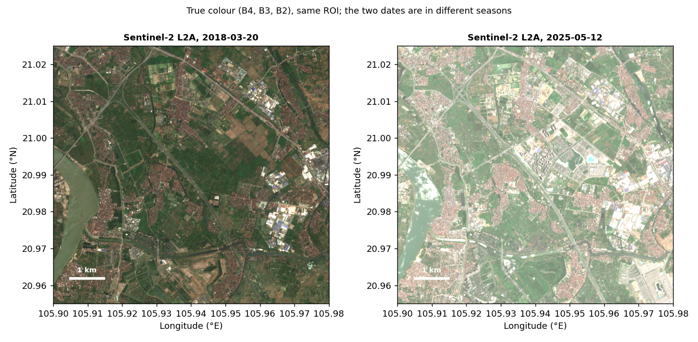
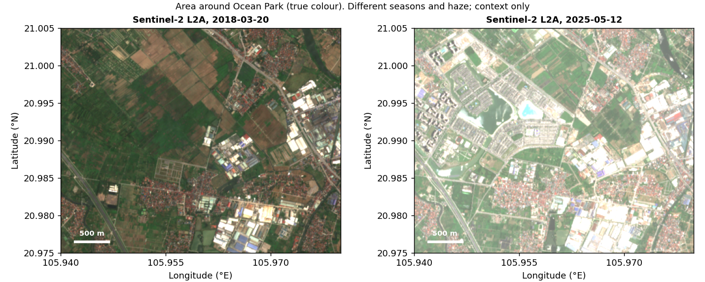
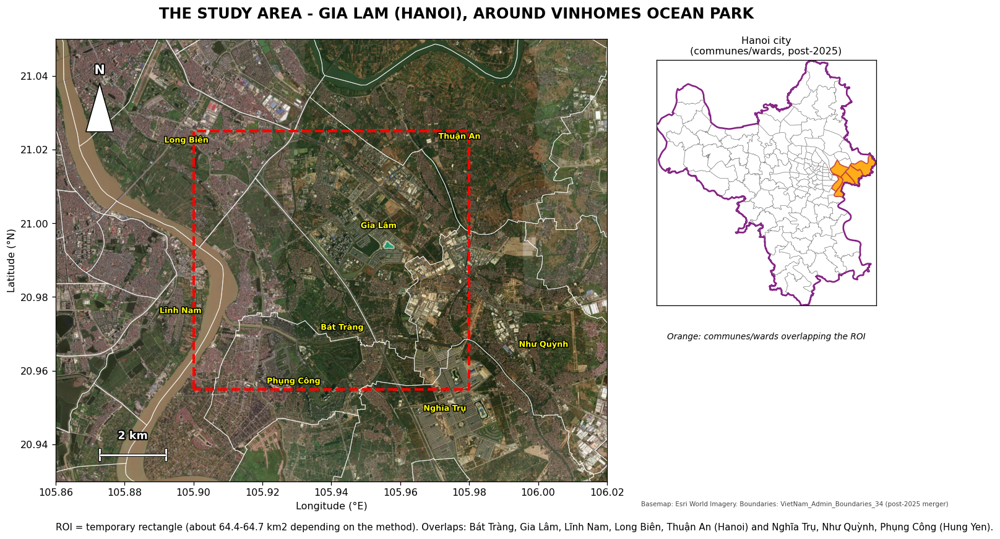
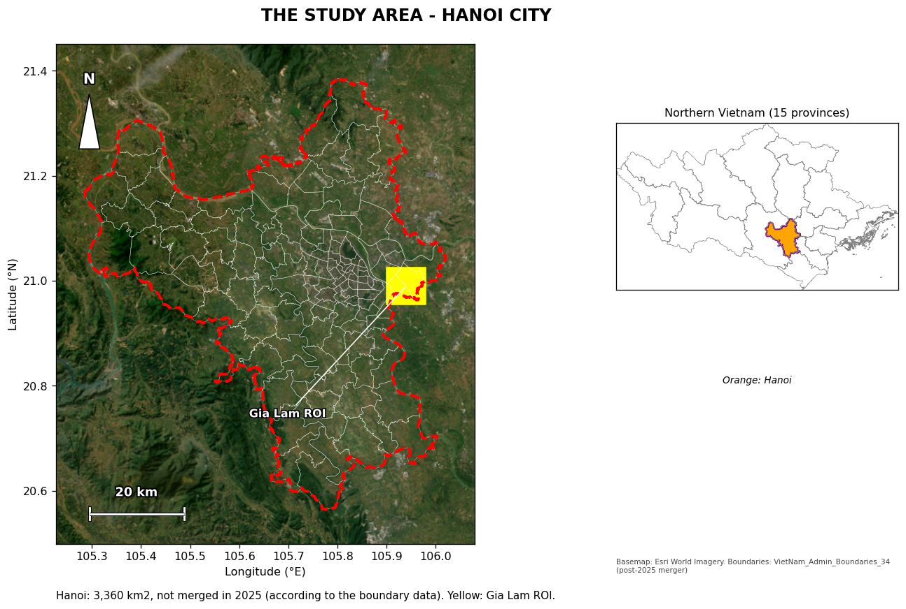
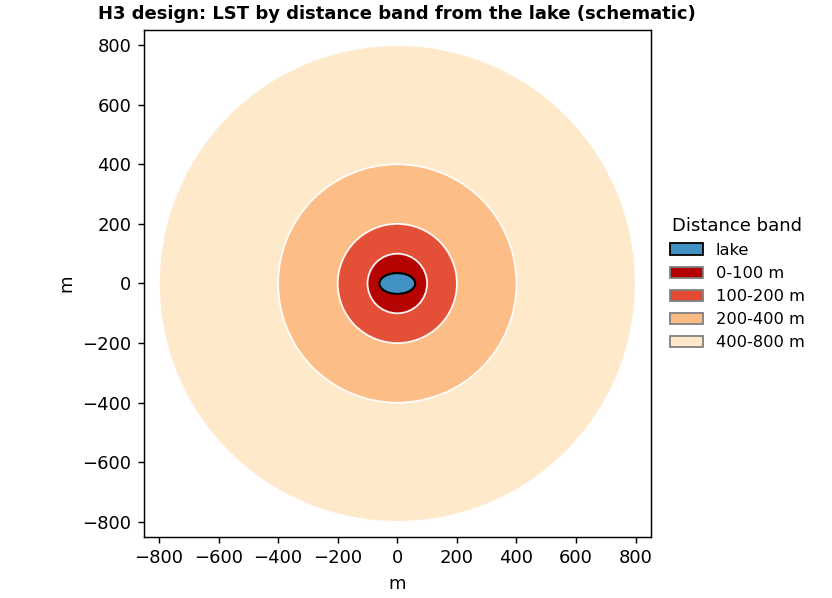
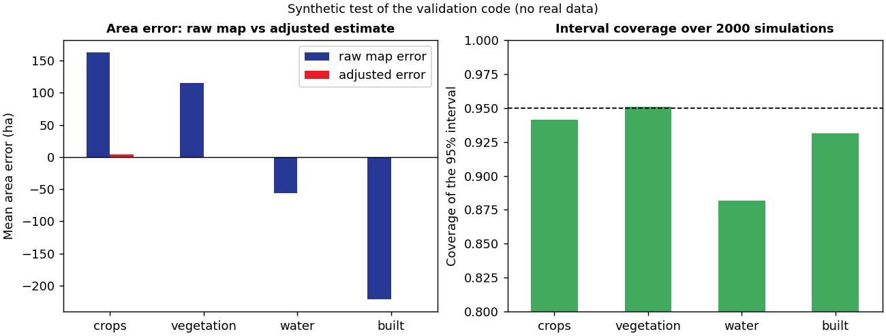
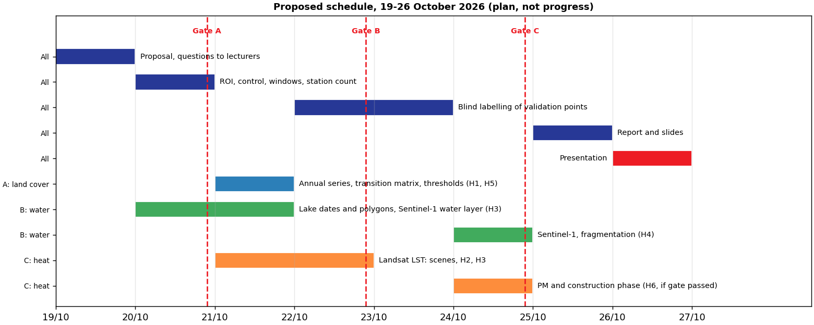

FROM FIELDS
TO CITIES
Gia Lâm, Hà Nội · 2018–2025 · quan sát Trái Đất
Bối cảnh đô thị hóa quanh Ocean Park

- Hà Nội mở rộng nhanh vào đất nông nghiệp ngoại ô
- Ruộng, cây xanh và ao hồ bị thay bằng nhà ở, đường và hạ tầng
- Đồng thời có công viên và hồ nhân tạo mới
- Cần đo cái gì đổi, ở đâu, thành loại đất nào
What: đối tượng nghiên cứu


Why: lý do nghiên cứu
- Khoảng trống dữ liệu: Hà Nội không có bản đồ công khai ghi dự án xây dựng khởi công, hoàn thành lúc nào (nhận định của nhóm, cần xác nhận). Quan sát Trái Đất là cách duy nhất nhìn lại quá khứ
- Hồ nhân tạo mới: các nghiên cứu làm mát của hồ ở Hà Nội thường dùng hồ cũ như Hồ Tây; hồ mới giữa vùng đô thị hóa cho phép so trước và sau
- Sức khỏe và môi trường: bụi công trường và nhiệt đô thị là mối quan tâm, nhưng liên hệ với số đo thực chưa được kiểm chứng ở khu vực này
Where: Gia Lâm, khu thử nghiệm

- ROI là hình chữ nhật thử quanh Ocean Park, ≈ 64,5 km²
- Không nằm gọn trong một đơn vị hành chính: giao với 8 xã, phường
- ≈ 74% thuộc Hà Nội (Gia Lâm, Bát Tràng, Long Biên, Thuận An, Lĩnh Nam)
- ≈ 26% thuộc Hưng Yên (Phụng Công, Như Quỳnh, Nghĩa Trụ)
- Sau 2025 không còn cấp huyện
Where: thành phố Hà Nội

- ≈ 3.360 km² theo dữ liệu ranh giới
- ROI chiếm khoảng 2% diện tích thành phố
- Cấp kiểm tra tính tổng quát hóa của kết luận từ ROI
- Nhiều trạm bụi mịn hơn quanh ROI (cần đếm)
Where: miền Bắc Việt Nam

- ≈ 115.900 km²
- Đồng bằng và miền núi, khí hậu và lịch canh tác khác nhau
- Chỉ áp dụng H1 và LST theo vùng
Pipeline mở rộng: Gia Lâm, Hà Nội, miền Bắc
Số cảnh Landsat 8/9 có mây cảnh dưới 30%, tháng 5–9/2025, tra trên Planetary Computer. Miền Bắc cần thống kê ở độ phân giải thô hơn (khoảng 1,16 tỷ điểm ảnh ở 10 m).
Giả thuyết theo cấp quy mô
| Giả thuyết | Gia Lâm | Hà Nội | Miền Bắc | |
|---|---|---|---|---|
| H1 | Chuyển đổi lớp phủ sang xây dựng | ● | ● | ● |
| H2 | Nhiệt: vùng chuyển đổi so với đối chứng | ● | ● | ○ |
| H3 | Làm mát quanh hồ nhân tạo mới | ● | – | – |
| H4 | Phân mảnh thực vật | ● | ● | ○ |
| H5 | Chuyển đổi tập trung quanh dự án | ● | – | – |
| H6 | Bụi mịn và công trình xây dựng | ○ | ○ | – |
● áp dụng · ○ có điều kiện (H2 miền Bắc cần hiệu chỉnh địa hình; H6 cần đủ trạm đo) · – không áp dụng (cần dữ liệu hồ, dự án, trạm cục bộ)
Câu hỏi nghiên cứu
Giả thuyết là dạng liên hệ. Mỗi giả thuyết có phép đo, kiểm định và giả thuyết không (H0), và có thể bị bác bỏ.
Giả thuyết H1, H2, H3
| Mã | Giả thuyết | Phép đo | Kiểm định |
|---|---|---|---|
| H1 | Phần lớn diện tích xây mới 2018–2025 đến từ đất trồng trọt | Ma trận chuyển đổi (ha, %) | Khoảng tin cậy 95% có hiệu chỉnh diện tích theo mẫu phân tầng |
| H2 | Điểm ảnh chuyển đổi ấm hơn ruộng ổn định vào mùa nóng | ΔLST Landsat 8/9 (2025 trừ 2018) | Hiệu của hiệu với vùng đối chứng, kiểm soát NDVI |
| H3 | Quanh hồ nhân tạo mới, LST giảm theo khoảng cách | LST theo dải 0–100, 100–200, 200–400, 400–800 m | Hồi quy kiểm soát NDBI/NDVI; block bootstrap |


Giả thuyết H4 và H5
| Mã | Giả thuyết | Phép đo | Kiểm định |
|---|---|---|---|
| H4 | Thực vật còn lại bị phân mảnh hơn | Số mảnh, diện tích mảnh trung bình, mảnh lớn nhất | Cùng đơn vị bản đồ tối thiểu hai năm; so với mô hình null |
| H5 | Chuyển đổi tập trung quanh dự án | % chuyển đổi theo khoảng cách tới dự án hoặc đường | So với phân bố khoảng cách ngẫu nhiên |
Giả thuyết H6 và cổng đi hoặc dừng
| Nội dung | |
|---|---|
| H6 | PM2.5/PM10 tại điểm đo cao hơn vào thời kỳ có nhiều diện tích đang thi công quanh điểm đo (pha thi công suy ra từ vệ tinh), sau khi kiểm soát khí tượng và mùa |
| Phép đo | Nồng độ µg/m³ (không dùng AQI tổng hợp); diện tích pha thi công trong vòng 500 m, 1 km, 2 km |
| Kiểm định | Hồi quy hiệu ứng cố định theo trạm, kiểm soát gió, mưa, lớp biên, mùa |
| Cổng | Điều kiện để kiểm định |
|---|---|
| G1 | Ít nhất 3 trạm trong ~10 km, số liệu liên tục ≥ 12 tháng |
| G2 | Độ phủ theo ngày đạt ngưỡng nhóm đặt (gợi ý ~70%) |
| G3 | Biến pha thi công kiểm chứng bằng ~30 điểm ảnh lịch sử |
| G4 | Các trạm có biến thiên pha thi công để so |
Kết quả hợp lệ: ủng hộ, bác bỏ, hoặc không kiểm định được; kết quả thứ ba là phát hiện về khoảng trống dữ liệu.
Dữ liệu dự kiến
| Dữ liệu | Vai trò | Hạn chế chính |
|---|---|---|
| Dynamic World (10 m) | Lớp phủ, xác suất, chuyển đổi | Nhầm lẫn giữa các lớp thực vật; chưa kiểm chứng |
| Sentinel-2 L2A | Tham chiếu hình ảnh, chỉ số | Ít cảnh sạch mùa đông–xuân |
| Sentinel-1 (SAR) | Nước thường trực, ruộng ngập | Nhiễu đốm; cần kiểm tra độ phủ 2018 |
| Landsat 8/9 C2 L2 | LST mùa nóng | Nhiệt gốc 100 m; Landsat 9 chỉ từ 2022 |
| Ảnh lịch sử độ phân giải cao | Tham chiếu kiểm chứng | Gán nhãn thủ công |
| Trạm PM2.5/PM10, ERA5 | Biến phụ thuộc và khí tượng của H6 | Số trạm và độ phủ chưa biết |
Chạy trên Google Earth Engine, Planetary Computer; Python: rasterio, geopandas, xarray, scikit-learn.
Độ khả dụng ảnh vệ tinh trên ROI

| Cửa sổ | L8/9 2018 | L8/9 2025 |
|---|---|---|
| Jan–Mar | 0 | 10 |
| Jan–Jun | 2 | 17 |
| May–Sep | 4 | 10 |
- Không có cảnh Landsat sạch Jan–Mar 2018: nhiệt phải dùng mùa nóng
- Mùa nóng 2018 chỉ 4 cảnh (15/5, 7/6, 2/7, 4/9): cần xem từng cảnh và dùng vùng đối chứng
Thử nghiệm kỹ thuật Landsat LST
| Cảnh | Ngày | Điểm ảnh hợp lệ trong ROI |
|---|---|---|
| Landsat 8 | 07/06/2018 | 0,89 |
| Landsat 9 | 06/09/2025 | 0,83 |
- Kiểm tra: đọc theo cửa sổ ROI, mặt nạ mây, đổi thang (nhân 0,00341802, cộng 149, đọc từ metadata)
- Chọn cảnh theo tỉ lệ điểm ảnh sạch trong ROI, không theo mây của cả cảnh
- Hai ngày khác tháng và thời tiết: không so sánh nhiệt độ
Công cụ và thư viện
| Bước | Công cụ | Tình trạng |
|---|---|---|
| Lớp phủ, chuyển đổi, chuỗi năm | Google Earth Engine (JavaScript) | Script thử đã có; chưa chạy bản v2 |
| Tra cứu và đọc ảnh | pystac-client, planetary-computer, rasterio | Đã dùng (Notebook 02, 03, 05) |
| Ranh giới, bản đồ | geopandas, shapely, contextily, matplotlib | Đã dùng (Notebook 01) |
| Kiểm chứng | numpy, pandas, scikit-learn | Đã chạy trên dữ liệu giả lập (Notebook 04) |
| Hồi quy, bootstrap, phân mảnh | statsmodels, scipy.ndimage | Kế hoạch |
| Dòng lệnh GDAL, QGIS | GDAL, QGIS | GDAL hỏng trên máy dùng, QGIS chưa cài |
Mã nằm trong Notebooks (Jupyter) và GEE_Scripts; chạy lại bằng Python 3.12.
Thiết kế kiểm chứng
- Mẫu ngẫu nhiên phân tầng theo lớp bản đồ, 250–400 điểm, gán nhãn mù trên ảnh lịch sử độ phân giải cao; 3 người cùng gán một phần để đo độ đồng thuận (kappa)
- Báo cáo diện tích đã hiệu chỉnh kèm khoảng tin cậy 95% (cách của Olofsson và cộng sự 2014), không báo diện tích thô của bản đồ
| Lớp (dữ liệu giả lập) | Sai số diện tích thô (ha) | Sai số sau hiệu chỉnh (ha) | Độ phủ KTC 95% |
|---|---|---|---|
| Đất trồng trọt | 162,6 | 3,8 | 0,94 |
| Thực vật | 114,7 | −1,4 | 0,95 |
| Nước | −56,2 | −0,7 | 0,88 |
| Đất xây dựng | −221,1 | −1,7 | 0,93 |

Mã kiểm chứng đã được thử bằng mô phỏng 2.000 lần trên dữ liệu giả lập (Notebook 04): sai số trung bình sau hiệu chỉnh gần 0; độ phủ khoảng tin cậy 88–95%, thấp hơn ở lớp hiếm. Chưa có nhãn thật.
Dự trù nghiên cứu
| Hạng mục | Dự trù |
|---|---|
| Nhân lực | 3 sinh viên đóng góp ngang nhau; khoảng 34 giờ mỗi người trong 8 ngày (gợi ý) |
| Dữ liệu và công cụ | Miễn phí; trạm bụi mịn và ERA5 cần khóa hoặc tài khoản miễn phí |
| Tính toán | Máy cá nhân và Earth Engine trên trình duyệt; ROI 64 km² nhỏ |
| Rủi ro lớn nhất | Ít cảnh Landsat sạch 2018; H6 không đủ trạm; gán nhãn kiểm chứng tốn thời gian |
| Cổng A (tối 20/10) | Chốt ROI, đối chứng, cửa sổ; đếm trạm (G1–G2). Không đạt thì dừng H6 |
| Cổng B (22/10) | Bản đồ chuyển đổi có ngưỡng và mẫu kiểm chứng ban đầu. Không đạt thì cắt H4, H5 |
| Cổng C (24/10) | Có kết quả H1–H3; từ 25/10 chỉ viết báo cáo và slide |
Phân công nhóm (đề xuất)
| Vai trò | Thành viên | Phụ trách chính | Chung cả nhóm |
|---|---|---|---|
| A | Trương Tuấn Nghĩa | Lớp phủ và chuyển đổi: H1, H5 | Gán nhãn 1/3 mẫu kiểm chứng; viết Introduction và Conclusion |
| B | [thành viên 2] | Nước và Sentinel-1: H3, WP2 | như trên |
| C | [thành viên 3] | Nhiệt: H2, WP4 | như trên |
Mỗi người viết phần Methodology và Results của mảng mình. H4 và H6 chia sau khi qua cổng A.
Lịch thực hiện 19–26/10

Nếu thiếu thời gian, cắt theo thứ tự: bản đồ ưu tiên, Sentinel-1, H5, H4, H6. Giữ H1, H2, H3 và kiểm chứng.
Câu hỏi xin ý kiến giảng viên
- Mức nào của công cụ LLM (tra cứu, gỡ lỗi, giải thích khái niệm) được chấp nhận, và ghi vào báo cáo thế nào
- Thời lượng thuyết trình và cấu trúc slide mong muốn
- Báo cáo và slide viết bằng tiếng Anh hay tiếng Việt
- Có được dùng Earth Engine và Planetary Computer ngoài các nền tảng đã giới thiệu
- Hạn nộp báo cáo cùng thời điểm thuyết trình 26/10
- Cổng dữ liệu nào ghi thời điểm khởi công và hoàn thành dự án xây dựng ở Hà Nội; trạm bụi mịn nào gần Gia Lâm
- Mốc bắt đầu thực hành: đề ghi thứ Hai 18/10, nhưng 18/10/2026 là Chủ Nhật
CẢM ƠN
HỎI ĐÁP
Gia Lâm, Hà Nội · 2018–2025